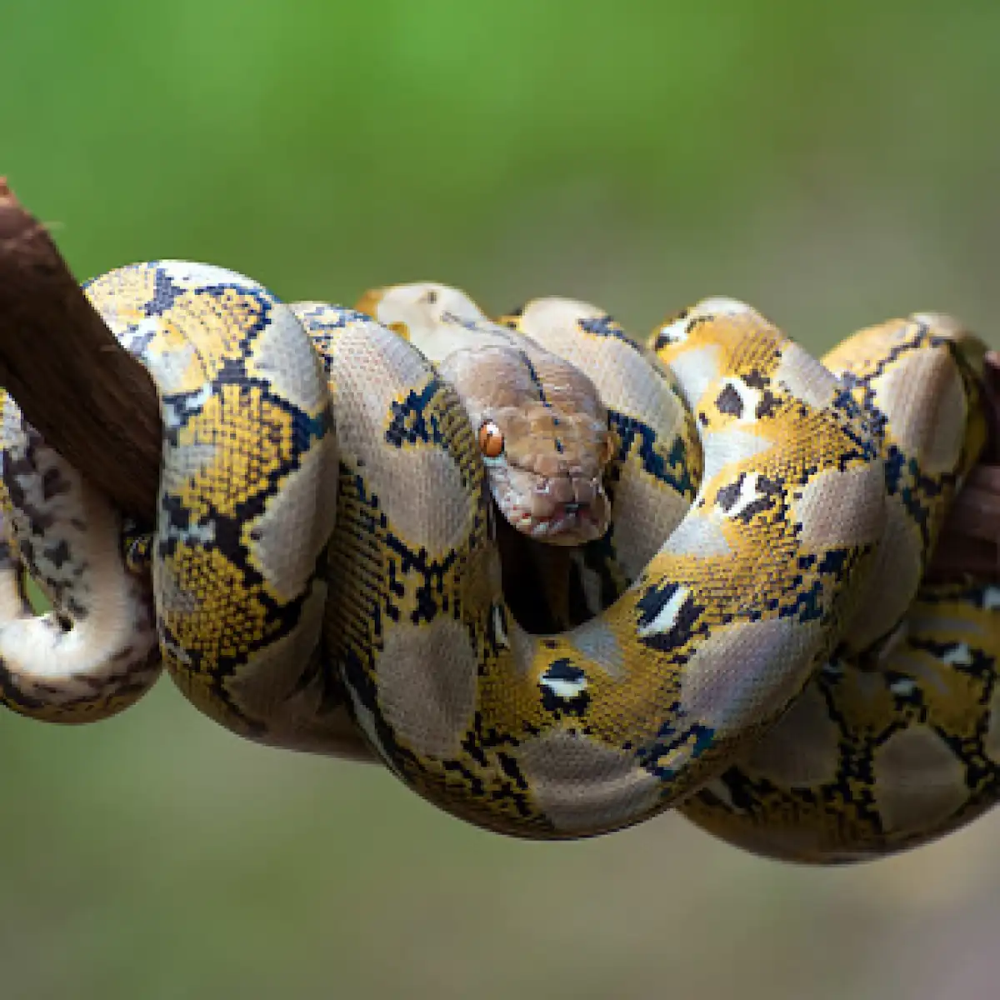

Constrictors are snakes that coils around their prey and sqeeze them so strongly to suffocate them. Constrictors are not venomous. Yet they can grow so long and big enough to creatures 2 times their size! Their lower jaws are adapted to open wide, allowing them to eat large creatures with their normal-sized heads!
Wrestler Killer

Constrictors are snakes that coils around their prey and sqeeze them so strongly to suffocate them. Constrictors are not venomous. Yet they can grow so long and big enough to creatures 2 times their size! Their lower jaws are adapted to open wide, allowing them to eat large creatures with their normal-sized heads!